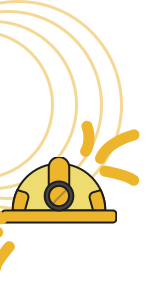
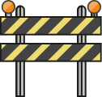
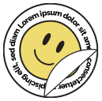

Civil Expo 2022 is a series of national and international scale
events held by
LE-HMS FTSP ITS in the form of seminars, competitions in the field of civil engineering, and student
conferences which will be held from October to November 2022.
From this event, it is hoped that new enthusiasm and innovation will emerge from the contestants so that
they can be a provision for the next generation of civil engineers in facing a new era, namely the era
of economic globalization. This new era demands an increase in solid competitive capabilities in
technology, management, and human resources, as well as continuous efforts to develop innovation and
create cost efficiency to compete in preparation for a world without borders. In addition, this activity
is also expected to be able to introduce the field of civil engineering to the broader community because
it plays a vital role in infrastructure development in Indonesia.

THEME

CIVIL EXPO ITS 2022 mengusung tema Developing Smart City Concept of IKN
Nusantara through Sustainable Construction.
Berarti,
Mengembangkan konsep smart city pada IKN Nusantara dengan menerapkan pembangunan berkelanjutan.
BACKGROUND

“Developing Smart City Concept of IKN Nusantara through Sustainable Construction.”
DKI Jakarta is the capital city with the seventh-highest congestion index in the world. One of the
solutions given by the government is to move the state capital from Jakarta to East Kalimantan. Although
it reaps much debate, this project is still implemented and stipulated in Law No. 3 of 2022 concerning
the State Capital.
In paragraph (2) of article 3, one of the principles of development and development of the Capital of
the Archipelago is a smart city, which means creating a comfortable and efficient city for governance,
business, and residents through information, communication, and technology. In addition, paragraph (2)
of article 3 also discusses sustainable construction as a concept that creates a comfortable environment
based on natural resource efficiency and environmentally friendly design. This principle is under the
civil expo field, which is engaged in Civil Engineering, so this is an exciting matter to be discussed
at Civil Expo ITS 2022. In addition, Civil Expo ITS 2022 also wishes to help disseminate these
principles.